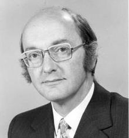

paul Baran

An Internet pioneer, Paul Baran invented packet switching techniques that can be credited with playing a key role in the development of the Internet.
Born in Poland, Paul immigrated to the US, where he graduated from Drexel University in 1949 with a degree in electrical engineering.
He would later get his Masters in engineering at UCLA while working for Hughes Aircraft.
He joined the RAND Corporation, where he worked on developing a communications system that could survive the damage of a nuclear weapon.
Originally, he called the process “message blocks.” Other scientists including Donald Davies, who would later change the name to “packet switching,”
had also come to a similar conclusion at the same time.
LAWRENCE ROBERTS

Dr. Roberts designed and managed the first packet network, the ARPANET (the precursor to the Internet).
At that time, in 1967, Dr. Roberts became the Chief Scientist of ARPA taking on the task of designing, funding, and managing the radically new communications network concept of packet switching.
Since then Dr. Roberts has founded five startups; Telenet, NetExpress, ATM Systems, Caspian Networks, and Anagran.
Leonard Kleinrock
Dr. Leonard Kleinrock pioneered the mathematical theory of packet networks, the technology underpinning the Internet.
For his enormous contribution to understanding the power of packet networks he was honored with the Charles Stark Draper Award as one of the fathers of the Internet,
along with Vinton Cerf, Robert Kahn, and Larry Roberts. He is a developer of ARPANET, the seedling that grew into today’s global Internet,
and his laboratory’s UCLA Host computer became the first ARPANET node in September 1969. A month later, he directed the first transmission to pass over the blossoming network.
Donald Davies

Donald Davies was one of the inventors of packet switching computer networking. He coined the term 'packet' and today’s Internet can be traced back directly to this origin.
Other scientists also came to the same conclusion at about the same time.
In 1947, after learning about the Automatic Computing Engine (ACE) he joined the National Physical Laboratory (NPL) laboratory as a member of the small team,
which was led by Alan Turing of Bletchley Park fame. The group's work, based on Turing's design, eventually led to the Pilot ACE computer.
It was one of the first four or five electronic stored-program digital computers in the world. Davies had played an important part in the detailed design and development of the machine,
and its successor, the full-scale ACE.